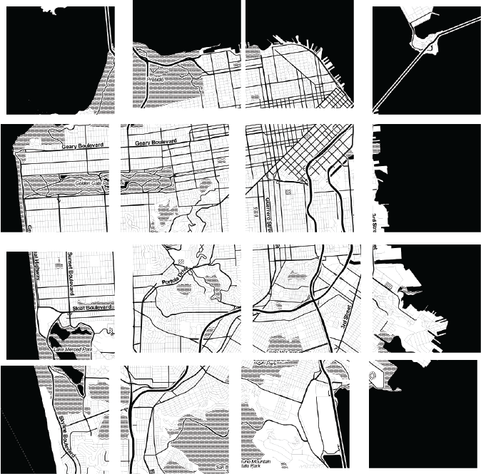
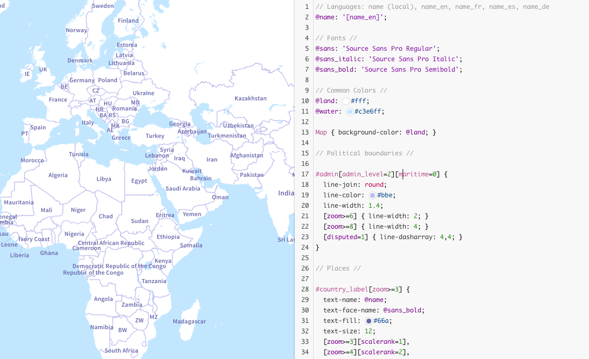
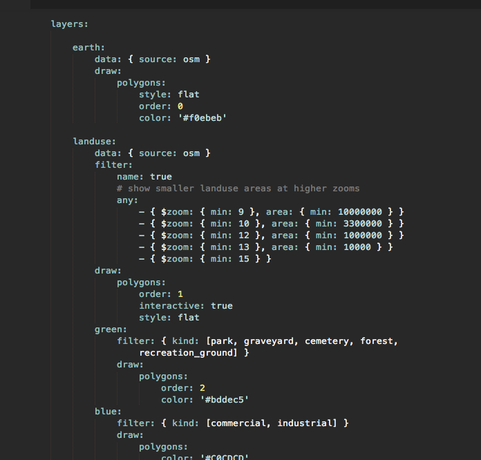
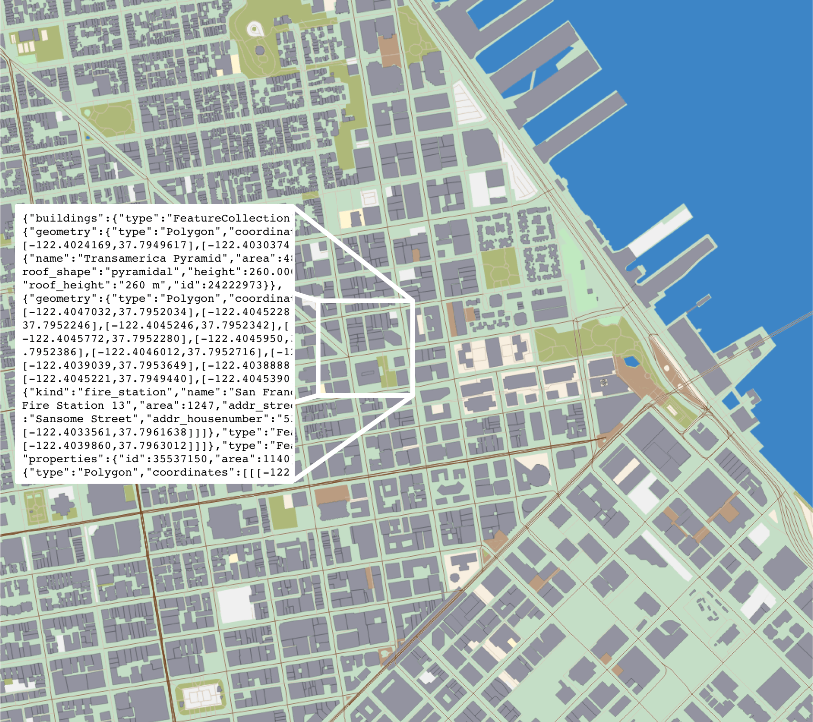
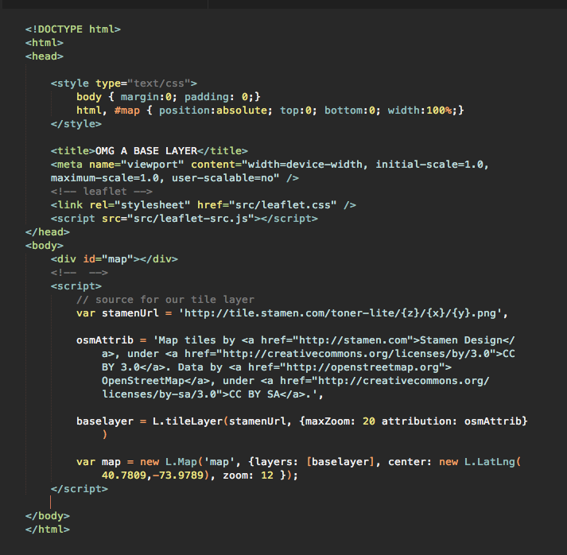

the base layer!!
let's talk about tiles
256x256 raster image files
number of tiles expands exponentially per zoom level
zoom level 0: 1 tile
zoom level 1: 4 tiles
and so on...

http://tile.openstreetmap.org/4/4/5.png
tile server
http://tile.openstreetmap.org/4/4/5.png
zoom level
http://tile.openstreetmap.org/4/4/5.png
x/y coordinates in the tileset
tile styling happens in a variety of ways
which we're not covering in-depth right this second, but can look like this:


tiles are rendered and cached
so that they will load real fast like this
types
raster: lots and lots of images
vector: lots of packets of data rendered on the fly

super exciting cool thing
base layer sources
you can run your own tileserver...
different map platforms (Google, Mapquest, Mapbox, Mapzen) offer use of base layers, usually requiring an API key or tiered subscription plans for usage
Mapbox also offers basically a platform-as-service model, providing software for styling tiles and hosting for those tiles
They also have the nicest satellite imagery of pretty much anyone
We can get into DIY satellite imagery later if anyone wants to know more about that
today we'll be using a base layer from maps.stamen.com
which uses OpenStreetMap data but doesn't require an API key
questions?
example
created and open-sourced in 2011 by Vladimir Agafonkin for CloudMade
has really strong community supporting it, making plugins, etc.
Mapbox hired Vlad in 2013, so it's increasingly optimized to work with Mapbox products
tldr capitalism and open source

questions?
{kind=link}